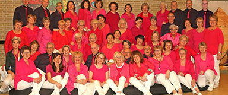

<div class="event-info">
	<div>
		<div class="img-wrap">
	
		</div>
		<div class="songs">
			<p>Jingle SoundSation</p>
			<p>Vivre/Laat me</p>
			<p>For The Longest Time</p>
			<p>Seven Bridges Road</p>
			<p>Nights In White Satin</p>
			<p>Lay Down</p>
		</div>
		<div class="content-wrap">
    <p><strong>Popkoor Soundsation uit Aalsmeer</strong></p>
	<p>Popkoor Soundsation is een enthousiast Aalsmeers koor met ongeveer 70 actieve leden.</p>
	<p>Soundsation is een jong koor want ze bestaan pas sinds begin 2010.</p>
	<p>Het repertoire bestaat uit eigentijdse nationale en internationale popsongs. Zoals van Simon and Garfunkel, Blof en Amy Mcdonald.</p>
	<p>&nbsp;</p>
	<p>Dirigent: Irma Zethof</p>
	<p>&nbsp;</p>
	<p><a href="http://www.soundsationaalsmeer.nl" target="_blank">http://www.soundsationaalsmeer.nl</a></p>
	<p><a href="https://www.facebook.com/popkoorsoundsation/" target="_blank">https://www.facebook.com/popkoorsoundsation/</a></p>
		</div>
	</div>
</div>
